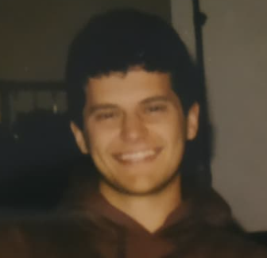

Bio
Nato e cresciuto in Emilia, mi sono trasferito in Olanda per vedere se un pezzo di terra potesse davvero essere più piatto della bassa modenese (è possibile!). Nonostante voli in bici sotto la pioggia come un vero Dutch, il mio corpo viaggia ancora a parmigiano e tortellini, i quali in genere occupano il buona parte del mio bagaglio a mano.
Ho studiato Systems and Control alla TU di Delft e ora programmo algoritmi per fare un uso più efficiente della rete elettrica. Lo faccio a Spectral assieme a decine di menti giovani e brillanti.
Credo che porsi le giuste domande sia più importante di ottenere delle risposte. Non solo perchè spesso si connettono idee e discipline apparentemente lontane tra loro, ma anche perchè così il viaggio della scoperta si fa più divertente, entusiasmante e significativo!